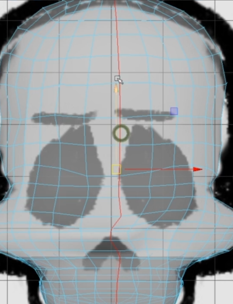

First let's divide the skull in two parts and delete the left part
Select the edge on right side

With Prevent negative scaling turned on(hold r+ left click) we'll make the edge straight and then holding X move it centre to word axis
 ----------------------------->
----------------------------->
Delete the left side

We try to adjust the edges in such a way so that we can get the eye area clear

Now delete that area

Using the edge modelling technique make the eye socket. Swap between various views to solve the problem
 Do extude and rescale the lines---------------------------------------->>>>>>>>>>
Do extude and rescale the lines---------------------------------------->>>>>>>>>>
Lets try to bridge the eye socket part with rest of the skull
Try creating the edges so that the match both sides

Using Append to polygon tool to connect the edges

>
 ---------->
----------> --------Lets smmoth it----->
--------Lets smmoth it----->